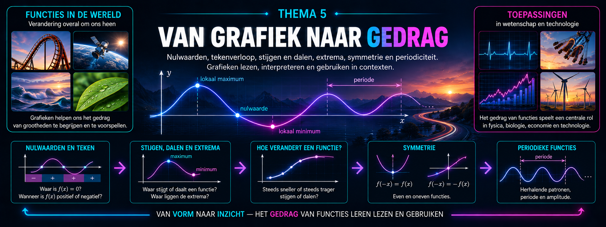

Overzicht van de hoofdstukken
1Parate kennis — Je wiskundige gereedschapskist
Wiskunde bouwt voort op wat je al kent.
In de volgende thema’s gaan we nieuwe begrippen onderzoeken: verbanden in data, functies, nulpunten, tekenverloop, limieten, asymptoten en nog veel meer. Daarbij willen we niet telkens moeten stoppen omdat een breuk, een macht of een vergelijking in de weg zit.
Daarom zetten we eerst je wiskundige gereedschapskist klaar.
In dit thema leer je de technieken uit vorige jaren niet opnieuw van nul. Je controleert vooral of je ze nog voldoende paraat beheerst.
Denk bijvoorbeeld aan:
Je moet zelf kunnen herkennen welk gereedschap bruikbaar is. Daarom oefenen we in dit thema ook op:
Aan het einde van het thema combineren we verschillende technieken in één probleem. Zo maken we de overstap van losse rekenvaardigheden naar het echte wiskundige probleemoplossen dat je in het vijfde jaar steeds vaker nodig zult hebben.
Thema1-Parate-kennis/Parate-kennis Thema1-Parate-kennis/Parate-kennis-oefeningen

Overzicht van de hoofdstukken
1Van werkelijkheid naar wiskunde — en terug
Waarom beginnen we bij de werkelijkheid?
Wiskunde lijkt op het eerste gezicht vaak te beginnen met getallen, formules en grafieken. In de wetenschappen loopt de weg meestal andersom.
We vertrekken van een vraag over de werkelijkheid. We meten grootheden, verzamelen gegevens en zoeken naar patronen. Pas daarna proberen we die patronen met wiskunde te beschrijven.
Een tabel met meetwaarden kan bijvoorbeeld suggereren dat twee grootheden met elkaar samenhangen. Een grafiek kan het gedrag van dat verband zichtbaar maken. Een formule kan vervolgens toelaten om waarden te berekenen of voorspellingen te maken.
In dit thema onderzoeken we daarom eerst hoe de brug tussen werkelijkheid en wiskunde wordt gebouwd.
We besteden aandacht aan:
Daarbij ontdekken we meteen een belangrijk principe dat doorheen de volledige cursus zal terugkeren: een wiskundig model is niet de werkelijkheid zelf. Het is een vereenvoudigde beschrijving waarmee we bepaalde vragen over die werkelijkheid proberen te beantwoorden.
Daarom eindigt een wiskundig probleem ook niet wanneer de berekening klaar is. We moeten terugkeren naar de oorspronkelijke situatie en ons afvragen of het resultaat betekenisvol en redelijk is.
Zo ontstaat een manier van werken die we later opnieuw zullen gebruiken bij gegevens, functies, limieten, afgeleiden, integralen en andere wiskundige modellen:
Hoe gebruiken we wiskunde om van waarnemingen tot betrouwbare uitspraken over de werkelijkheid te komen?
Thema2-Modelleren/Werkelijkheid-terug Thema2-Modelleren/Werkelijkheid-terug-oefeningen

Overzicht van de hoofdstukken
1Van data naar puntenwolk 2Correlatie — Hoe sterk
is het lineaire verband? 3Lineaire regressie — Van data naar model 4Samenhang is
nog geen oorzaak
Van gegevens naar een verantwoorde conclusie
In wetenschappen verzamelen we voortdurend gegevens.
We meten bijvoorbeeld temperatuur en energieverbruik, concentratie en absorbantie, instraling en elektrisch vermogen, of twee kenmerken van een groep personen.
Een tabel met meetwaarden is echter nog geen antwoord.
We willen ontdekken of er in die gegevens een verband zit, hoe sterk dat verband is en of we het met een wiskundig model kunnen beschrijven.
In dit thema bouwen we die analyse stap voor stap op.
We beginnen met gekoppelde gegevens en stellen ze voor in een spreidingsdiagram. Zo wordt een mogelijk verband zichtbaar en leren we kijken naar richting, vorm, sterkte en bijzonderheden in een puntenwolk.
Wanneer het verband ongeveer lineair is, gebruiken we vervolgens de correlatiecoëfficiënt om de richting en sterkte van die lineaire samenhang nauwkeuriger te beschrijven.
Daarna gaan we een stap verder. Met lineaire regressie bouwen we uit de gegevens een wiskundig model:
Zo’n model laat ons toe om het globale patroon samen te vatten, parameters in hun context te interpreteren en voorspellingen te maken.
Maar een berekening of model is nooit het einde van het verhaal.
Een sterke correlatie betekent bijvoorbeeld niet automatisch dat de ene grootheid de andere veroorzaakt. Ook voorspellingen buiten het gebied waarin gemeten werd, kunnen misleidend zijn.
Daarom leren we voortdurend kritisch terugkeren naar de oorspronkelijke situatie:
Doorheen het thema onderzoeken we dus niet alleen hoe we gegevens wiskundig analyseren, maar vooral ook wat we uit die analyse werkelijk mogen besluiten.
Hoe maken we van een verzameling gegevens een wiskundig onderbouwde én wetenschappelijk verantwoorde conclusie?
Thema3-Verbanden/Van-data-naar-puntenwolk Thema3-Verbanden/Van-data-naar-puntenwolk-oefeningen Thema3-Verbanden/Correlatie Thema3-Verbanden/Correlatie-oefeningen Thema3-Verbanden/Lineaire-regressie Thema3-Verbanden/Lineaire-regressie-oefeningen Thema3-Verbanden/Samenhang-oorzaak Thema3-Verbanden/Samenhang-oorzaak-oefeningen

Overzicht van de hoofdstukken
1Van relatie naar functie 2Domein, bereik,
beelden en originelen 3Wanneer is een functie omkeerbaar? 4De inverse functie
Van verband naar functie — en terug
In wiskunde en wetenschappen onderzoeken we voortdurend hoe grootheden met elkaar samenhangen.
De temperatuur verandert met de tijd, de positie van een voorwerp hangt af van het tijdstip, een sensor zet een gemeten grootheid om in een elektrisch signaal, en de oppervlakte van een figuur hangt af van haar afmetingen.
Zulke verbanden kunnen we op verschillende manieren voorstellen: met woorden, een tabel, een grafiek of een formule.
In dit thema bouwen we stap voor stap de taal van de functie op.
We beginnen met relaties tussen grootheden en onderzoeken wanneer zo’n relatie werkelijk een functie is. Daarbij leren we schakelen tussen verschillende voorstellingen en gebruiken we functienotatie om een verband nauwkeurig te beschrijven.
Daarna kijken we preciezer naar de waarden die een functie kan verwerken en opleveren.
We onderzoeken het domein en het bereik, bepalen beelden en originelen en leren die begrippen zowel grafisch als algebraïsch gebruiken.
Vervolgens stellen we een nieuwe vraag:
Dat blijkt niet altijd mogelijk.
Sommige functies sturen verschillende invoerwaarden naar dezelfde uitvoer. Dan gaat informatie verloren en is de terugweg niet eenduidig.
Daarom onderzoeken we wanneer een functie injectief, surjectief en uiteindelijk bijectief is.
Pas wanneer iedere toegelaten uitvoerwaarde precies één origineel heeft, kunnen we de functie werkelijk omkeren.
Zo komen we tot de inverse functie.
Daarbij ontdekken we een fundamenteel grafisch verband:
en dus:
Doorheen het thema verbinden we voortdurend algebra, grafieken en betekenisvolle contexten.
We gebruiken GeoGebra om functies te onderzoeken, domeinen te beperken, beelden en originelen zichtbaar te maken en de relatie tussen een functie en haar inverse te ontdekken.
Zo bouwen we niet alleen een verzameling begrippen op, maar een samenhangende manier van denken:
Hoe beschrijven we een verband zo nauwkeurig dat we niet alleen vooruit kunnen rekenen, maar — wanneer dat mogelijk is — ook eenduidig terug?
Thema4-Functies/1-relatie-functie Thema4-Functies/1-relatie-functie-oefeningen Thema4-Functies/2-Begrippen Thema4-Functies/2-Begrippen-oefeningen Thema4-Functies/3-Bijectie Thema4-Functies/3-Bijectie-oefeningen Thema4-Functies/4-Inverse-functie Thema4-Functies/4-Inverse-functie-oefeningen

Overzicht van de hoofdstukken
1Nulwaarden en tekenverloop 2Stijgen, dalen en
extrema 3Hoe verandert een functie? 4Symmetrie — even en oneven functies
5Periodieke functies en amplitude
Van grafiek naar gedrag
Een grafiek is veel meer dan een verzameling punten in een assenstelsel.
In wetenschappen gebruiken we grafieken voortdurend om te onderzoeken hoe grootheden veranderen.
De temperatuur kan eerst stijgen en daarna dalen, de hoogte van een bewegend voorwerp kan een maximum bereiken, een elektrisch signaal kan zich periodiek herhalen en een populatie kan steeds verder toenemen, maar daarbij almaar trager groeien.
Aan de vorm van een grafiek kunnen we dus heel wat informatie over een functie aflezen.
In dit thema leren we die informatie systematisch herkennen, beschrijven en interpreteren.
We beginnen met de plaatsen waar een functie de waarde nul aanneemt. Die nulwaarden verdelen het domein vaak in gebieden waarin de functiewaarden positief of negatief zijn.
Zo komen we van nulwaarden tot het tekenverloop van een functie:
Daarna onderzoeken we hoe een functie verandert.
We bepalen waar een functie stijgt, daalt of constant blijft en herkennen plaatsen waar een maximum of minimum optreedt.
Maar alleen weten dat een functie stijgt of daalt, vertelt nog niet het volledige verhaal.
Een functie kan steeds sneller stijgen, steeds trager stijgen, steeds sneller dalen of steeds trager dalen.
We leren daarom ook kijken naar de manier waarop de stijging of daling zelf verandert.
Vervolgens onderzoeken we regelmaat in grafieken.
Sommige grafieken vertonen symmetrie. Bij even functies herkennen we symmetrie ten opzichte van de \(y\)-as, terwijl oneven functies een bijzondere symmetrie ten opzichte van de oorsprong vertonen.
Andere functies herhalen steeds opnieuw hetzelfde patroon. We spreken dan over periodieke functies en onderzoeken onder andere hun periode en amplitude.
Zo leren we een grafiek steeds vollediger lezen:
Daarbij werken we niet alleen van grafiek naar eigenschappen.
We redeneren ook in de andere richting: als we eigenschappen van een functie kennen, welke vorm moet haar grafiek dan hebben?
GeoGebra gebruiken we daarbij als onderzoeksgereedschap. We vergelijken grafieken, onderzoeken bijzondere punten en intervallen en gaan na welke eigenschappen veranderen wanneer we een functie aanpassen.
Uiteindelijk willen we verschillende stukjes informatie met elkaar verbinden tot één samenhangende analyse:
Een grafiek leren lezen betekent dus meer dan coördinaten aflezen.
We willen uit haar vorm kunnen afleiden hoe een functie zich gedraagt en wat dat gedrag betekent in de situatie die ze beschrijft.
Welke informatie zit verborgen in de vorm van een grafiek, en hoe gebruiken we die om het gedrag van een functie te analyseren en te interpreteren?
Thema5-Functies_eig/1-Nulwaarden Thema5-Functies_eig/1-Nulwaarden-oefeningen Thema5-Functies_eig/2-Stijgen Thema5-Functies_eig/2-Stijgen-oefeningen Thema5-Functies_eig/3-Verandering Thema5-Functies_eig/3-Verandering-oefeningen Thema5-Functies_eig/4-Symmetrie Thema5-Functies_eig/4-Symmetrie-oefeningen Thema5-Functies_eig/5-Periodiek Thema5-Functies_eig/5-Periodiek-oefeningen
Overzicht van de hoofdstukken
Voor dit thema zijn nog geen hoofdstukken
toegevoegd.
Overzicht van de hoofdstukken
Voor dit thema zijn nog geen hoofdstukken
toegevoegd.
Overzicht van de hoofdstukken
Voor dit thema zijn nog geen hoofdstukken
toegevoegd.
Overzicht van de hoofdstukken
Voor dit thema zijn nog geen hoofdstukken
toegevoegd.
Overzicht van de hoofdstukken
Voor dit thema zijn nog geen hoofdstukken
toegevoegd.